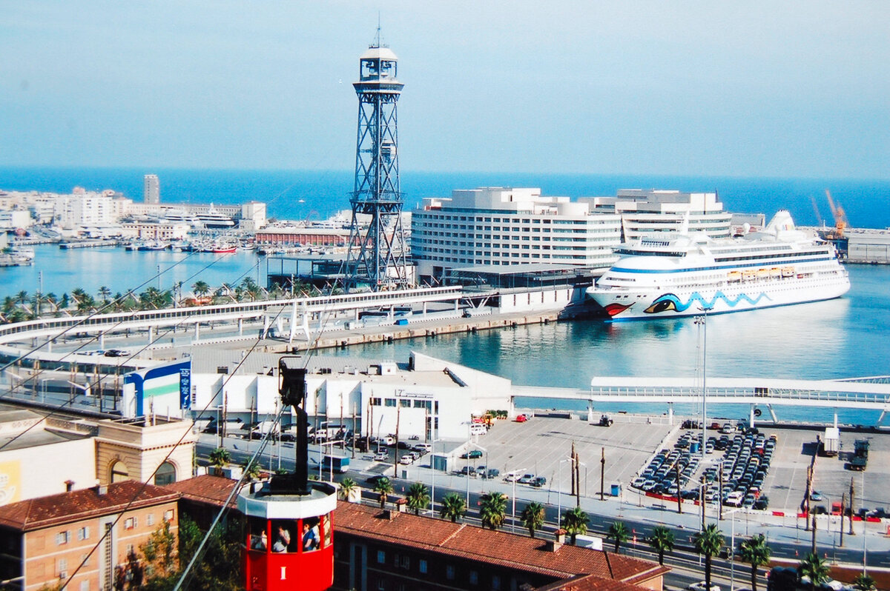

← Perfil/Recerca/EMICREUER-BCN

EMICREUER-BCN
EMIssions atmosfèriques dels CREUERs al port de Barcelona: inventari 2012–2025, impacte de la regulació internacional i escenaris de transició energètica.
Creuers Viking Vesta i Viking Star al Moll Adossat · Anthony Levrot / Wikimedia Commons, CC BY-SA 4.0
Manuscrit en preparació · Nascut d'un TFG · Sense finançament extern
Barcelona és el port de creuers més actiu d'Europa —i, segons diverses fonts, també un dels més afectats per la contaminació atmosfèrica que generen. Mentre estan amarrats, els creuers mantenen els motors auxiliars en marxa contínua per alimentar llums, climatització i cuines —l'anomenat "hotelling"— alliberant NOx, CO, partícules (PM), carboni negre (BC) i CO₂ a tocar de barris densament poblats com Ciutat Vella i la Barceloneta.
EMICREUER-BCN construeix el primer inventari d'emissions vaixell a vaixell del port de Barcelona per als 14 anys 2012–2025, seguint com ha evolucionat la contaminació en paral·lel al creixement de la infraestructura portuària i a l'auge dels "mega-creuers". L'objectiu és oferir una base transparent i reproduïble que l'autoritat portuària i els reguladors puguin fer servir per planificar l'electrificació dels molls (cold ironing) i avaluar la futura regulació mediterrània de qualitat de l'aire.
Àmbit d'estudi
El Port de Barcelona, el més actiu d'Europa en passatgers de creuer, a menys d'1 km de Ciutat Vella i la Barceloneta
Moll Adossat, Port de Barcelona
Terminals de creuers A–F · Imatge de satèl·lit (Esri World Imagery, sobre l'ecosistema OpenStreetMap/Leaflet)

Metodologia
Un model Tier 3 activitat-per-activitat (EMEP/EEA Guidebook 2023), escala rere escala
Inventari escala per escala
9.487 escales oficials del Port de Barcelona (2012–2025) creuades amb IMO, MMSI i nom de vaixell.
Base de dades de potència
377 registres per a 343 vaixells únics (Port de Barcelona, IHS-Sea, MarineTraffic, CruiseMapper, VesselFinder); cobertura del 99,9%.
Model Tier 3
E = P × LF × EF × T per fase (navegació, maniobra, hotelling), amb motor principal i auxiliar per separat.
Auditoria de qualitat de dades
21 vaixells amb potències contradictòries, verificats un a un contra fitxes de drassana i naviliera; 18 corregits, 1 confirmat.
Factors d'emissió per any
Ajustats per la penetració de motors Tier I→II (NOx) i la retallada del 20% en PM des del límit global de sofre (2020).
Incertesa Monte Carlo
10.000 iteracions per als sis contaminants, més una anàlisi de sensibilitat sobre la ràtio de potència auxiliar/principal.
Validació externa
Comparació amb l'inventari oficial de l'Autoritat Portuària de Barcelona (2017) i amb Transport & Environment (2023).
Implementació reproduïble
Python (pandas, NumPy), 77 tests unitaris i un pipeline de control de qualitat automatitzat.
L'origen: un TFG
Un treball de fi de grau que ha crescut fins a convertir-se en un inventari complet 2012–2025
"Quantificació de les emissions de contaminants atmosfèrics dels creuers al Port de Barcelona"
El projecte va néixer com el Treball de Fi de Grau de Laura Seoane Álvarez, defensat el 12 de juny de 2025, que comparava les emissions del port en dos anys (2017 i 2024) i va rebre un premi al millor pòster. El treball es va desenvolupar en col·laboració amb el Centro Tecnológico Naval y del Mar (CTN), sota la codirecció del Dr. Iván Felis Enguix, en el marc d'unes pràctiques curriculars de Laura al centre.
A partir d'aquesta base, Marc Cerdà i Domènech (GMAR-UB) ha ampliat l'anàlisi a la sèrie completa 2012–2025, incorporant l'auditoria de qualitat de dades, l'ajust dels factors d'emissió any a any, la quantificació d'incertesa per Monte Carlo i els escenaris de transició 2030–2050, en un manuscrit actualment en preparació.
Equip
Un projecte propi del GMAR-UB, sense consorci ni finançament extern
Marc Cerdà i Domènech
GMAR-UB · idea original, ampliació de l'anàlisi a la sèrie 2012–2025 i redacció del manuscrit.
Laura Seoane Álvarez
UB, Grau en Ciències del Mar · autora del TFG original (2025), base de dades i anàlisi inicial 2017–2024.
Dr. Iván Felis Enguix
Centro Tecnológico Naval y del Mar (CTN) · codirector del TFG.
Raül (cognom pendent)
Pràctiques d'empresa · desenvolupador d'una eina web (GitHub) per quantificar emissions. Detalls del projecte pendents d'afegir.
Ona (cognom pendent)
Autora del TFG més recent vinculat al projecte. Detalls pendents d'afegir.
Afiliació